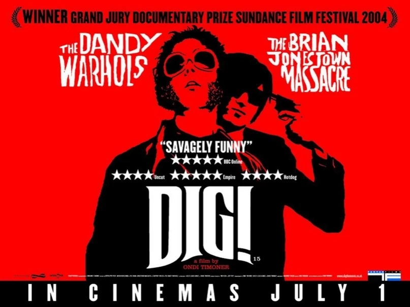
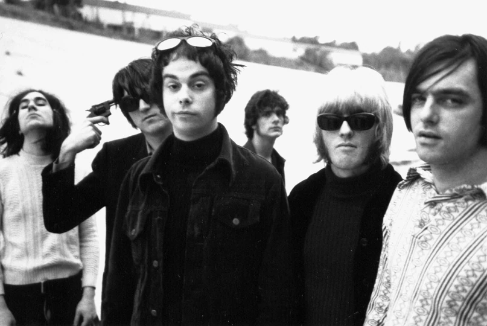
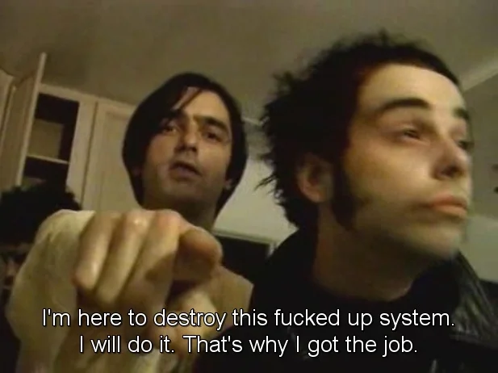
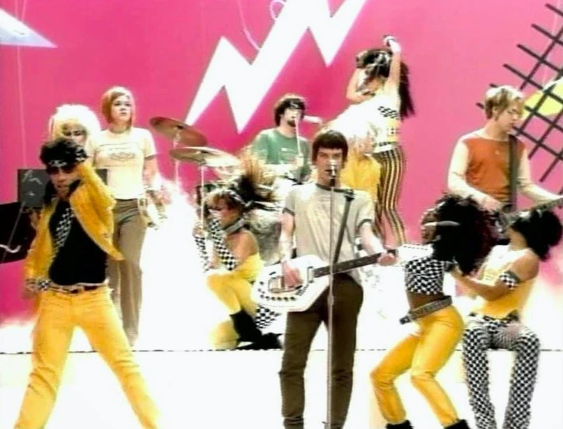
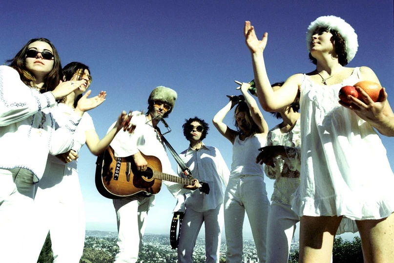
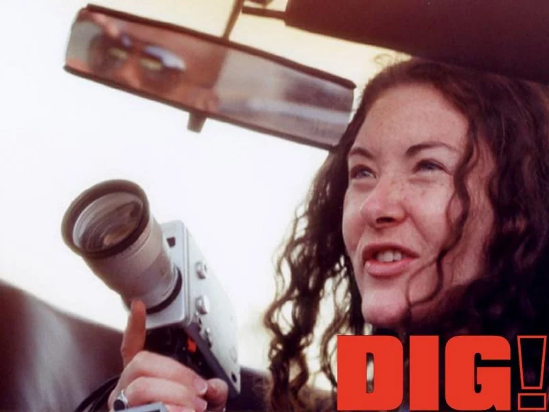

Тимур Ахмедов набросал для вас пьяный и прокуренный портрет вечного конфликта андеграунда и индустрии массового потребления
Dig! («Врубайся!») — документальный фильм 2004 года про неспокойные отношения двух рок-н-ролльных группировок конца 90-х. Режиссер — Онди Тимонер, оператор — Онди Тимонер, монтажер… ну вы поняли. Фильм создавался во многом одним человеком.

В середине 90-х «свежая» выпускница Йельского университета искала действующего музыканта, чтобы лично запечатлеть его бытовую и концертную жизнь. Онди Тимонер собиралась углубиться в столкновение искусства и коммерции. Она считала, что документалистика в тогдашнем состоянии никому не интересна, поэтому в ее фильме должен был появиться кто-нибудь забавный, харизматичный и еще живой. Кто-нибудь, кто зацепит массовую аудиторию.
Сначала девушка договаривалась с поп-звездами. Договорилась с Куин Латифой, но сразу подтянулись агенты, которые хотели изменить готовую историю в своих интересах — представить клиента с максимальной выгодой и попутно наплевать на мнение режиссера. Тимонер отказалась.
Поразмыслив, она решила присмотреться к формату группы. Коллектив можно было рассмотреть как целую семью с кучей разных характеров. Показать путь этой семьи к большим контрактам с вечеринками, бухлом и сумбурными гастролями. Короче говоря, бодрый сюжет и договориться проще.
Поначалу в списке значилось 10 групп. Тимонер преследовала их вдоль Западного побережья Штатов, пока не услышала на записи каких-то ребят из 60-х. Во всяком случае, звучали они вообще не по времени. Когда Онди рассказали, что чуваки эти современные и живут в Сан-Франциско, она поняла, что надо ехать. Вскоре Тимонер встретилась с Энтоном Ньюкомбом — лидером The Brian Jonestown Massacre. Чуть погодя он рассказал ей про своих друганов, которые недавно выпустили первый альбом. Некие The Dandy Warhols. Шел 1996 год.
Тимонер оценила харизму Ньюкомба и движуху вокруг его банды. Ничего подобного она еще не видела. Парень сходу выразил отношение к воротилам коммерческой музыки: «Да идут они на хуй. Я пишу письма, а они — почтальоны». Конфликт обозначился сам собой. Затем Онди пересеклась с фронтменом Dandy Warhols Кортни Тэйлором-Тэйлором, у которого были похожие взгляды. Концепция фильма складывалась на глазах: андеграундные музыканты против системы массовой звукозаписи.
Dig! слепили из 2500 часов видео и семи лет ламповых бесед, бухих концертов и наркотических глюков.
Что за группы?
The Brian Jonestown Massacre — одни из тех, кто в 90-е возрождал наследие 60-х и начала 70-х. Группу основали в 1990 году в Сан-Франциско. Назвались ребята в честь найденного на дне бассейна гитариста «Роллинг Стоунз» Брайана Джонса и идейной общины Джонстаун, что располагалась в Гайане (в 1978-м 909 членов общины совершили массовое самоубийство — Jonestown Massacre). Неплохо после Куин Латифы.

BJM взяли все лучшее у ранних Rolling, The Kinks и многих других. Классику разбавляли шугейзом и нойз-роком, находясь под влиянием My Bloody Valentine и The Jesus and the Mary Chain. Добавьте в эту смесь кряхтение лоу-фая, ноющий вокал и получите Энтона Ньюкомба с его ребятами. Мало кто так убеждает тремя аккордами, флейтами и ситарами. Jonestown Massacre были чем-то вроде Velvet Underground 90-х: херово записанные, но цепляющие с полуоборота. А еще на обложке одного из их альбомов засветился Джим Джармуш, который даже вписал песню BJM в свои «Сломанные цветы».
The Dandy Warhols собрались в Портленде в 1994-м с целью писать музыку, под которую можно выпить. Хотя бы одну их вещь вы слышали наверняка. В начале и середине нулевых Bohemian Like You запихивали чуть ли не в каждую рекламу. Да и клип активно крутили по MTV. Но эта песня с широкими аккордами Кита Ричардса мало расскажет о звучании Дэндис в конце 90-х. Тогда их музыка была винегретом из того же шугейза, нео-психоделии и монотонности Velvet.

Революция вместе
Раз индустрия — отстой, необходимо сообразить революцию. Энтон Ньюкомб решил, что эта работа как раз для него. Уже в самом начале Dig! он рубит программную речь: «Я собираюсь разбить эту ебаную систему. Я избран для этого. Мы собираемся совершить полную музыкальную революцию. Забудьте о других группах». Энтон полагал, что Dandy Warhols присоединятся к нему.
Онди Тимонер рассказывала, что Ньюкомб собирался выпускать с «Дэндис» совместные синглы. Она же не раз говорила про Brian Jonestown Massacre с посылом «офигительная музыка». Ребята должны были стать новыми Битлз и Стоунс, не иначе. Сами они прикалывались, мол, «устроим брит-поп войну в Америке, будем как Блер и Оэйзис».
«Революция» гремела по клубам Сан-Франциско, где в 60-е бунтовали Jefferson Airplane.
BJM время от времени накидывались в хлам, а потом пиздились друг с другом, или с каким-нибудь везунчиком из зала. Ну а Dandy Warhols просто красиво стояли на сцене полуголыми.
Обе банды обрастали единомышленниками.
Jonestown Massacre и «Дэндис» записывались на независимых студиях Лос-Анджелеса и Портленда. Иногда на их концертах появлялись скауты с крупных лейблов. Бедолаги, видимо, не догадывались, что выступление BJM обычно превращается в пьяный пиздец с летающими микрофонами. Никто не старался понравиться, вот и о контрактах речи не заходило. С «Дэндис» все было немного иначе. Они часто заглядывали на приятельский балаган, но по отдельности выступали мирно и понятно. Смотрелись симпатично, играли слаженно. Если бы кого-то захотели подписать, то определенно их.

От дружбы до не дружбы
Все было круто: Ньюкомб и Тэйлор-Тэйлор обожали друг друга и радовались своей движухе районных масштабов. А потом случилось вполне вероятное: Dandy Warhols заключили контракт с мейджор-лейблом. То был Capitol Records — символ продажности в глазах андеграунда. Мужик, который провернул сделку, объяснял: «Они могли стать большой группой, потому что создали собственный мир и не были скованы какими-либо трендами».
Вскоре «Дэндис» уже снимали стандартный клип с кучей слащавых крупных планов на свой первый хит-сингл — Not If You Were the Last Junkie on Earth. Композиция тоже была подходящей: четыре аккорда и цепляющий припев с отсылками к героину. Причесанная песня, созданная звучать на радио.

Когда Тэйлор-Тэйлор дал послушать новинку Ньюкомбу, последний отреагировал примерно никак. Похоже, в голове его крутилось лаконичное «ох ты ж ни хуя себе». Ребята из BJM предсказуемо начали стебаться: врубали песню в машине, стягивались жгутом и настукивали ритм по венам. Они-то реально кололись, да и не продавались никому.
Дороги главных героев быстро расходятся, и стартует идеологическая часть фильма. Dandy Warhols быстро спускают на землю. Их заверяли в успехе, а потом отклонили первую же версию нового альбома. В ней не хватало хитов, которые должны были стимулировать продажи.
«Мейджор-��ейблы уходят в минус с 9 из 10 альбомов. Только последний окупает все затраты. Сложно представить себе другой бизнес, в котором неудача — это 90% твоей работы. И при этом они все равно успешно функционируют. С ума сойти» — представитель независимого лейбла TVT Records.
«Группам, которые подписали контракт с мейджор-лейблом, не стоит расслабляться. Лейбл переворошит все, что только можно. Не потому что есть необходимость, просто такова сущность любой корпорации» — мужик с Capitol Records
Тэйлор-Тэйлор был в шоке: «Им вообще похуй на тебя, только хиты подавай. Когда ты подписываешь контракт, они говорят тебе, что карьера важнее хитов. А потом, если не пишешь хиты, им становится похуй на твою карьеру. Если бы я только был чуть умнее». Еще и с первым клипом не получилось. Кортни посчитал, что его накрасили как павлина. Он предъявлял режиссеру, которого наняли за 400 000 долларов. А тот говорил, что все нормально, потому что Тэйлор-Тэйлор не тянет на рок-звезду. Значит, и намалевать его — в самый раз. Учитывая самовлюбленный образ фронтмена Dandy Warhols и свежий контракт с Capitol, бунтарство его и впрямь смотрелось странно.
Клипы с The Dandy Warhols Come Down обошлись в тысячи долларов. В это время Brian Jonestown Massacre записывали альбом за 17 долларов. Энтон Ньюкомб платил сам. Пара подписей в бумагах — и между двумя группами выросла пропасть.
Dandy Warhols продолжили работать над вторым альбомом, с Capitol Records никто никуда не ушел. Теперь они тусовали с шиком, куда уж тут уходить. А у BJM все было просто и понятно: бесконечные концерты и шесть альбомов за два года. Запись особо не шлифовали. Из Ньюкомба перла куча идей, которая тут же превращалась в новый репертуар. Jonestown Massacre жили в облезлой хате, постоянно сочиняли, мало спали и закачивались наркотиками. Тэйлор-Тэйлор складно описал их рацион: «Я никогда не видел, чтобы они ели. Все, что они делают, — глушат ликер и нюхают порошки». Неудивительно, что парни постоянно собачились на сцене, дома и вообще где угодно. У всех давно поехала крыша.

BJM редко виделись с «Дэндис», но про их коммерциализацию не забывали. Потому и решили записать свой стебный ответ на Not If You Were the Last Junkie on Earth. Нарочито хитовую вещь назвали Not If You Were the Last Dandy on Earth. Энтон Ньюкомб ходил по Нью-Йорку и раздавал новый сингл бесплатно. Экземпляры доставались всем подряд: прохожим, обслуге отеля, продавцам за кассой. Ньюкомб демонстративно показывал в столице мира, насколько его не ебут деньги. Он еще и веселые посылки отправлял. Беднягам «Дэндис» прилетали гильзы, завернутые в конфетти и картонки, с призывами писать нормальную лирику.
Несмотря на видимый конфликт, Dandy Warhols всегда подчеркивали свою любовь к музыке Brian Jonestown Massacre, а Тэйлор-Тэйлор симпатизировал старому другу: «Энтон — с запасом самый сумасшедший и самый талантливый музыкант, которого я встречал»; «Я пытался догнать его, но он всегда сочинял что-нибудь, и ты такой «пфф, поверить не могу». Он всегда впереди».
Достоверность
Несмотря на многолетние старания Онди Тимонер, реакция на картину и ее героев получилась неоднозначной. Обвиняли в предвзятости, в том, что фильм однобоко рассказывает историю. Мол, Dandy Warhols взлетели высоко и выступили на лучших фестивалях, а Brian Jonestown Massacre так и остались нервными наркоманами с гастролями по мелким клубам. Удивляло и то, что весь фильм закадровым голосом озвучивает Кортни Тэйлор-Тэйлор. То есть именно он оценивает все происходящее со стороны.
По мнению Питера Хольмстрема, гитариста «Дэндис», ссора между его командой и BJM надумана, и они все время были неразлейвода: «Ей нужна была драма, и она ее придумала». Забавно, что Тэйлор-Тэйлор говорит обратное: «Мы не общались пару лет. Они все завидовали нам. Никто не любит видеть своих друзей успешными». Энтон Ньюкомб вообще не горел желанием обсуждать премьеру фильма, когда его расспрашивал какой-то японский журналист. «Сейчас я ничего не думаю по этому поводу. Кажется, зрителям не очень понравится».
Многим все же понравилось. 90 % на Rotten Tomatoes, 76 из 100 баллов на Metacritic, похвала от BBC и Empire, гран-при Сандэнса за лучшую документалку. Нетипичная работа напомнила кинообщественности, что документалистика — совсем нескучный жанр.
Титры
Для Онди Тимонер премьера Dig! стала началом успешной карьеры. Получив гран-при на Сандэнсе в 2004-м, она повторила свое достижение через пять лет с новой работой We Live in Public. Таким образом, Тимонер стала первым человеком в 25-летней истории фестиваля, который дважды был отмечен высшей наградой в одной категории. Оба фильма вошли в коллекцию Нью-Йоркского музея современного искусства. Онди — один из самых интересных документалистов современности.

С момента выхода Dig! Dandy Warhols выпустили еще шесть альбомов, но не один из них не дотянул до уровня продаж и оценок Thirteen Tales from Urban Bohemia (второй альбом с Capitol Records). Почти все участники играют в сторонних проектах, а Питер Хольмстрем собрал собственную группу Pete International Airport. Последний релиз «Дэндис» состоялся в январе этого года (лонгплей Why You So Crazy).
«Нельзя совершить революцию, если сидишь в андеграунде. В чем ебаный смысл? Энтону нужно было стать известным, тогда он смог бы рассчитывать на революцию» — Питер Хольмстрем
К началу нулевых весь первоначальный состав Brian Jonestown Massacre благополучно распался. Остался только Ньюкомб, который собрался и продолжил писать музыку. Результатом стали два сильных альбома — Bravery Repetition and Noise (2001) и …And This Is Our Music (2003). В текущем десятилетии Энтон успел записать альбом в Исландии, поработать с русскими и словаками на вокале и выпустить больше полудюжины психоделических пластинок. Он заметно повлиял на современный инди-рок. Некоторые считают BJM лучшей психоделик-рок-группой за кучу лет.
Ньюкомб уверен, что революция, затеянная им, все-таки состоялась. Его слова обрамляют картину Онди Тимонер.
«Революция уже произошла. Вы слышали, как White Stripes играют на ебаном радио? Когда я начинал, везде крутили Pearl Jam. Революция произошла, совершенно точно. Сколько людей копируют Pearl Jam сейчас? Не так уж много. А сколько копируют меня? Я сыграл свою роль в начале новой волны. Так почему же они не говорят, кто на них повлиял? Потому что они — эгоистичные ублюдки» — Энтон Ньюкомб
Энтон живет в противоречии. Он хотел быть успешным, хотел, чтобы его слушали толпы. В то же время он был настоящим контркультурщиком. Для таких контракт с мейджор-лейблом подобен творческому суициду. Записи Brian Jonestown Massacre продавались слабо, но как и в случае с Velvet Underground, значимость наследия перевесила коммерческую ценность. Главный философ Dandy Warhols Хольмстрем подытоживает красиво: «Их будут помнить всегда. А нас, кто знает, может и забудут».